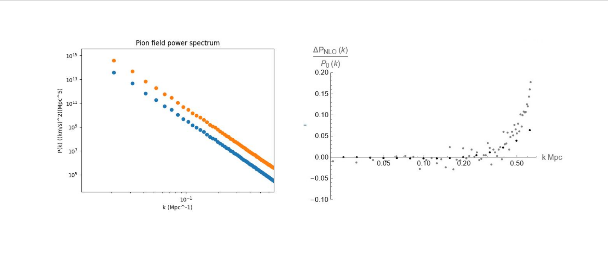
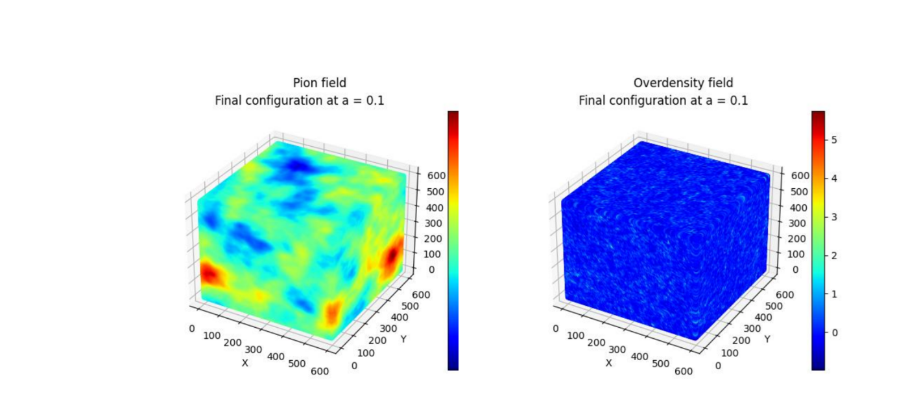

Fun fact about the video above
Only the brightest stars in this region emit mid-infrared light that can be picked up by Webb’s MIRI instrument, which is why this image has so many fewer stars than that captured by Webb’s NIRCam (Near-Infrared Camera). The darkest areas of the image are not empty space but areas where cosmic dust and gas are so dense that light cannot penetrate them to reach the telescope.
The universe's web of galaxies and voids grew from tiny early fluctuations. Our paper describes that growth with a single field.
That field is the velocity potential of the matter fluid in a ΛCDM universe. We call it the cosmic pion, because it is the Goldstone boson of spontaneously broken spacetime symmetry. Describing growth this way lets perturbation theory be organized systematically while the symmetries stay manifest.
The paper develops the theory to next-to-leading order, computes corrections to the power spectrum and checks them against the consistency relations that the broken symmetry requires. It then compares the results with simulations of structure evolution in the pion-field picture, and uses N-body simulations to measure the theory's coefficients.
In plain terms: the description follows one smooth field. The density of matter and the gravitational potential can be recovered from it.
My part
I am a co-author of the paper and, with my advisor Dr. Bart Horn, co-owner and coder of the simulation code, PLASTIC. We share authorship and copyright. My focus was the FFT-based simulation and mapping code: taking it from a Mathematica prototype to Python to C++, and making it fast.
-
Replaced the expensive step
The 3D simulation inverted a Laplacian with Green's functions, which costs O(N⁶) for a grid with N points per side. I replaced it with spectral inversion using FFTs, at O(N³ log N).
-
Wrote a custom FFT
A mixed-radix (2, 3, 5) Cooley–Tukey FFT in C++ that handles grid sizes beyond powers of two and works directly on 3D arrays. The thesis page has the benchmarks and the honest comparison with FFTW3.
-
Measured the speedup
About 400 times faster than the first Mathematica prototype: roughly 20 times from the move to Python, and roughly 20 times again from the move to C++. Multithreading across independent FFT slices added more on top.
What the simulation produces


Where it went
I presented this work at seven conferences and symposia between October 2022 and April 2025, ending with my honors thesis defense. The full list is on the home page.
Paper and code
- The paper on arXivCelik, Horn, Mishra & Muqattash (2026)
- Pion_research on GitHubA summary of the project and my contribution
- PLASTIC simulation codeMaintained in one place, by Dr. Horn and me
- My honors thesisThe FFT work in full detail
Acknowledgments: Dr. Bart Horn was the research advisor, and co-author of the paper and the code. Lara Celik and David Muqattash co-authored the paper. Eamon McShane gave input and testing on the code. Supported in part by the National Science Foundation's Research at Undergraduate Institutions program under grant PHY-2210475, and by the Kakos School of Arts and Sciences Summer Research Scholars Program.